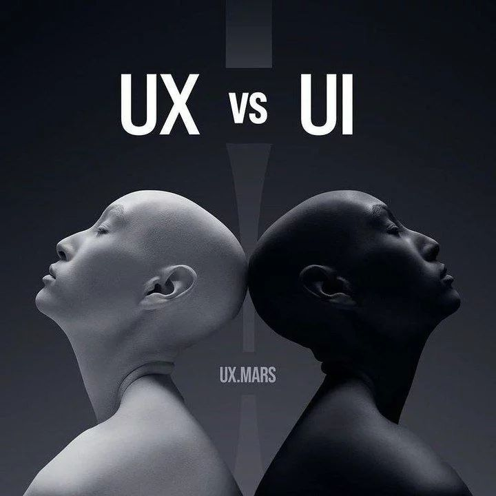
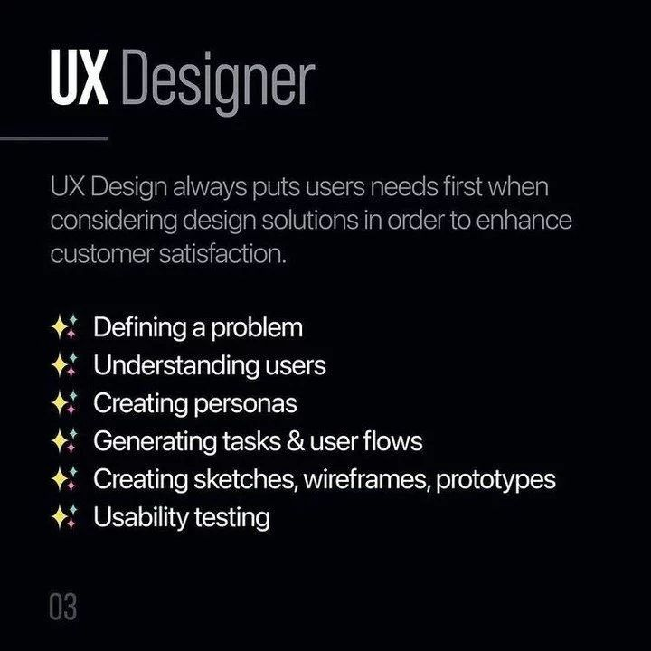
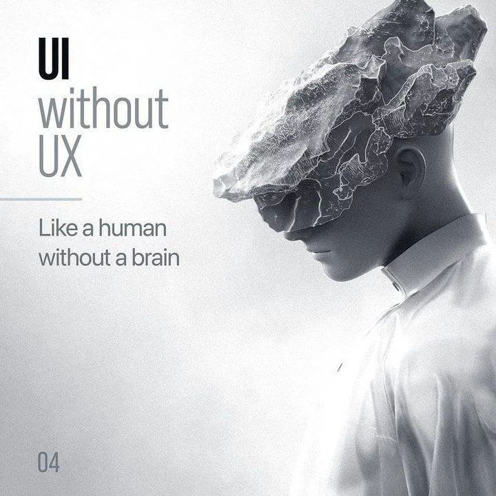
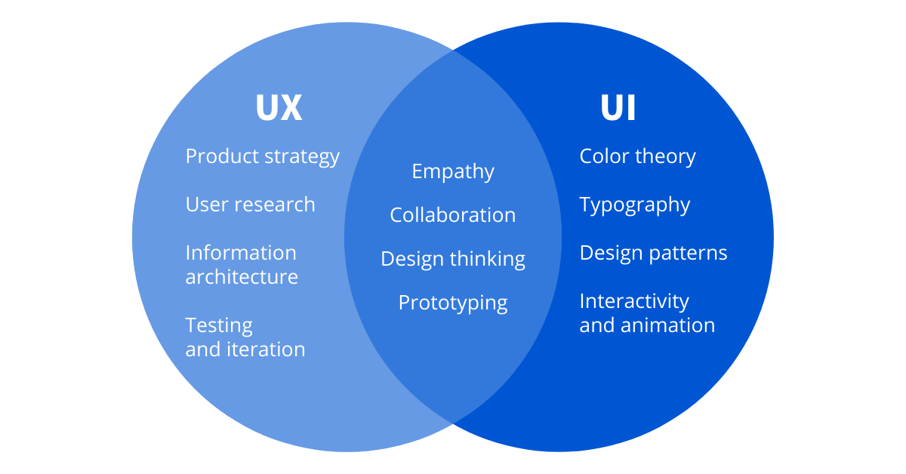
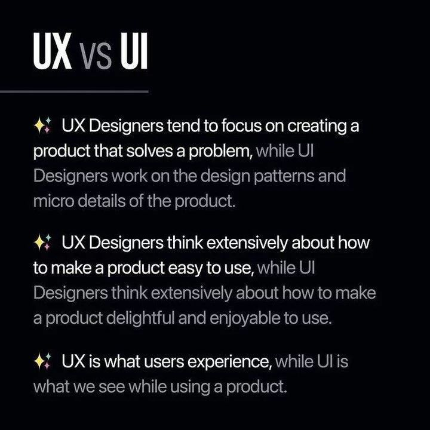
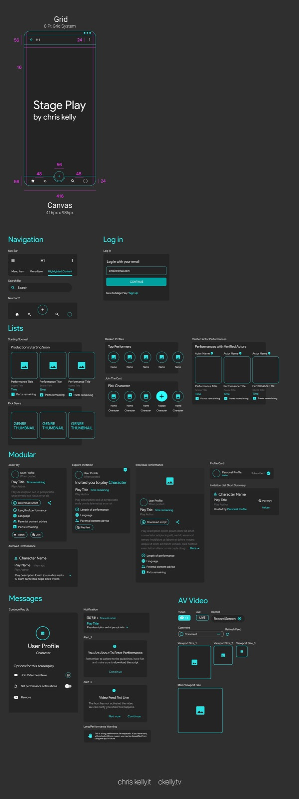

User Interface (UI) design primarily deals with the visual aspects of a digital product. It focuses on crafting the look and feel of the interface, including elements like buttons, icons, colors, typography, and layout.

Where User Experience (UX) design is concerned with the overall experience of the user when interacting with a product, UI Designers work inside the console utilizsing softwares like Figma, Sketch or XD
.





Where they meet: It's About The User

While UI design and UX design are closely related and often overlap, they represent distinct aspects of the design process. UI design is more about the presentation layer, while UX design is about the entire user experience.


UI Cornerstone Topics
- IconsAn icon is a symbol that represents a larger idea. It should concisely capture the idea that it represents.
- ColorsHere are some websites to check color harmony & inspo
- TypographyDefinition: Typography is the art and technique of arranging type to make written language legible, readable and appealing when displayed. The arrangement of type involves selecting typefaces, point sizes, line lengths, line-spacing, and letter-spacing, as well as adjusting the space between pairs of letters.
- GridA 12-column grid is the most common grid layout.
- Design SystemsComponents are the building blocks of an interface. They include buttons, checkboxes, labels, inputs, cards, and many others. Each of them has unique anatomy and implements a…
Finished this lecture?This lecture has 5 parts. It counts as complete once you've finished this page and all 5 parts: 0 of 5 done.